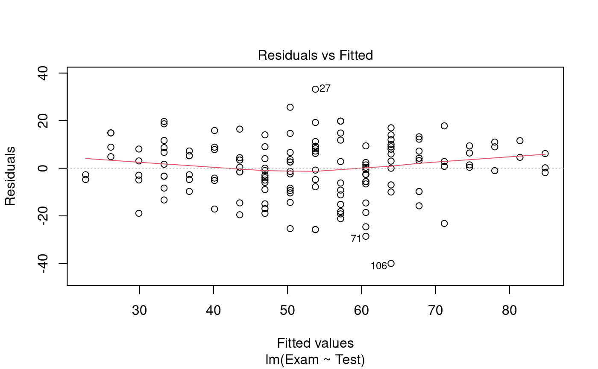
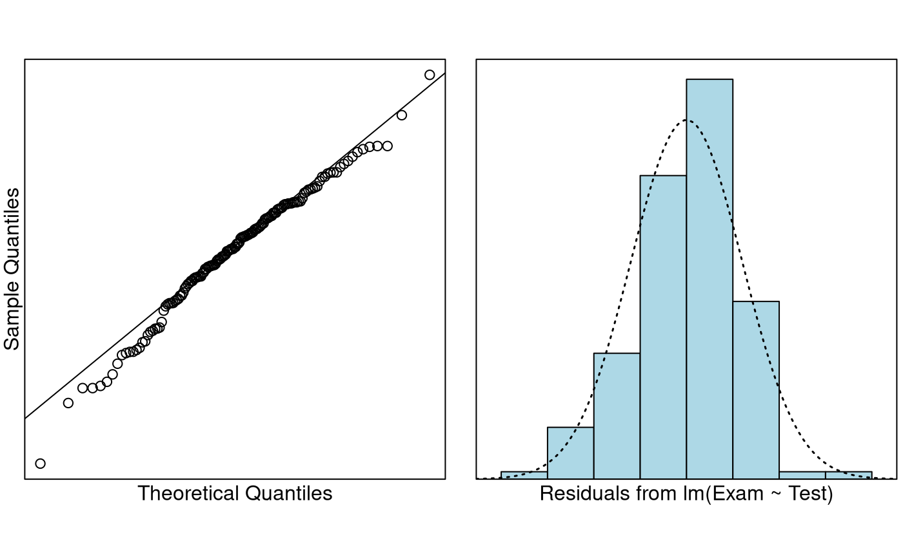

Problem
We wish to quantify the relationship between test mark and exam mark, especially for the purpose of being able to predict a student’s exam mark with their test mark (to aid in making decisions about aegrotat passes for students who do not sit the exam). In particular, we want to predict a student’s exam mark when their test mark is either 0, 10, or 20.
The variables of interest are:
-
Exam: Exam mark out of 100. -
Test: Test mark out of 20.
Question of Interest
We want to build a model to predict exam marks with test marks. In particular, we want to predict a student’s exam mark when their test mark is either 0, 10, or 20.
Read in and Inspect the Data
Stats20x.df = read.table("STATS20x.txt", header = TRUE)
plot(Exam ~ Test, data = Stats20x.df)The plot reveals a positive linear relationship between exam marks and test marks.
Model Building and Check Assumptions

normcheck(examTest.fit)
cooks20x(examTest.fit)
summary(examTest.fit)##
## Call:
## lm(formula = Exam ~ Test, data = Stats20x.df)
##
## Residuals:
## Min 1Q Median 3Q Max
## -39.980 -6.471 0.826 8.575 33.242
##
## Coefficients:
## Estimate Std. Error t value Pr(>|t|)
## (Intercept) 9.0845 3.2204 2.821 0.00547 **
## Test 3.7859 0.2647 14.301 < 2e-16 ***
## ---
## Signif. codes: 0 '***' 0.001 '**' 0.01 '*' 0.05 '.' 0.1 ' ' 1
##
## Residual standard error: 12.05 on 144 degrees of freedom
## Multiple R-squared: 0.5868, Adjusted R-squared: 0.5839
## F-statistic: 204.5 on 1 and 144 DF, p-value: < 2.2e-16
confint(examTest.fit)## 2.5 % 97.5 %
## (Intercept) 2.719020 15.449907
## Test 3.262659 4.309189Prediction Output
predTest.df = data.frame(Test = c(0, 10, 20))
predict(examTest.fit, predTest.df, interval = "prediction")## fit lwr upr
## 1 9.084463 -15.56475 33.73368
## 2 46.943703 23.03510 70.85231
## 3 84.802942 60.50438 109.10151Method and Assumption Checks
A scatter plot of exam marks vs test marks showed a linear association with approximately constant scatter and so a linear model was fitted.
All model assumptions appear to be satisfied - a slight trend in the residual plot was observed but does not seem to be of major concern.
Our final model is where .
Our model explained a modest 59% of the variability in the students’ final exam marks.
Executive Summary
We were interested in building a model to predict exam mark from test mark.
There was a significant linear relationship between test mark and exam mark (P-value 0). We estimate that each additional test mark (out of 20) obtained by the student would increase their exam mark by between 3.3 to 4.3 (out of 100) on average.
For test marks of 0, 10 and 20, we predict exam marks (for individual students) between -15.6 to 33.7, 23.0 to 70.9, and 60.5 to 109.1, respectively. These intervals are very wide and some of these intervals have bounds that are outside of the feasible values of exam mark (0-100). The model is not reliable for prediction.